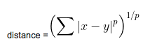

Duration
20 minutes
Lab Goals
The primary goal of this lab will be to build this generic distance function to calculate the distance between two points and then to create two specific cases and calculate those distances by applying partial application.
- We will first build a generic math function which calculates the distance between two points.
- Then, we will use that function to calculate the Euclidean distance and Manhattan distance between two points using partial application.
Steps
Build the generic distance function
Let's start by creating the generic function, which will calculate the distance between two points.
- Begin by creating a library project in your IDE and open script.fsx.
- Let's start by building the following function:
(SUM ( | x-y | )^p )^(1/p)
 - First, we will be taking in a
floatvalue p, and two points - x and y. - Since we want this to work on a group of coordinates, we'll have the x and y values come in as a list.
- We will need to create a function to subtract the corresponding elements in each list to form a new list of the differences. We can use
List.map2function to run a function that takes two values and returns a single value.
- Continuing with the original function:
|x-y|is the absolute value of x-y, we need to take the absolute value of each of the differences, F# has an abs function that does that. - Next, we need to take the resulting list to the power of p - remember in F#, you use the
**operator to apply a power. - Next, sum the resulting list using the proper
Listfunction. - Finally, take that sum and raise it to the power of
1/p. All of this should be performed in a function namedminkowski.
Create a function for two cases by applying partial application
Now that we the generic function created, we're going to consider two cases for the power (p):
- When
p=2, we get the "Euclidean distance" or, shortest, between two points formula. - When
p=1, we get the "Manhattan distance", where the shortest point from one address to another is not a straight line, but a number of blocks north and south and number of blocks east and west. - Create a function for each of these cases by partially applying the p value
- First, let's create the Manhattan distance function, remember that is:
SUM ( | x-y | ), we can utilize our existingminkowskifunction for this, since it has no power, pass in1.0. We want to create an open function here, so not all parameters will be supplied.
- Next, let's find the Euclidean distance:
SQRT (SUM ( | x-y |^2) )
- Finally, lets try it all out, create two lists with points, one with (0,0) and the other with (3,4).
- Then call your Manhattan function with the two arrays.
- And call the Euclidean function with the two arrays, pass the result into the
Sqrtfunction to complete the calculation.
- Select your code and click CTRL+ENTER to test it in the REPL
Summary
In this lab, we have applied partial application to a generic function to calculate distance.